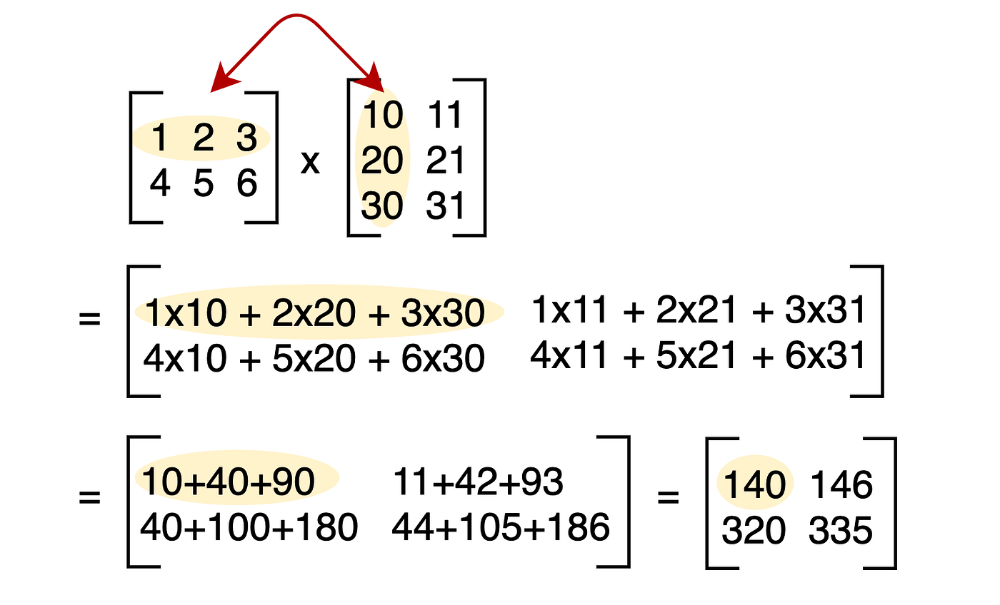

For animated intuition on the same topics, Grant Sanderson’s Essence of linear algebra playlist on YouTube (opens in a new tab).
Open the feedback form (new tab). I use responses to improve this module for new students. If your comments are about this page, choose Linear Algebra in the first question.
Work through this companion notebook while you read: open the Colab worksheet (new tab). Sign in with a Google account if Colab asks; then use File → Save a copy in Drive if you want your own editable version.
Who these notes are for. If you have taken something like AP Calculus (or an equivalent first-year calculus course), you already bring a lot to the table: you are comfortable with functions, graphs, slopes, and solving equations. You do not need to have seen a full college linear algebra class. This page is meant to onboard you into the vocabulary ML and physics papers use—vectors, matrices, span, eigenvalues—so the rest of the lab feels less like alphabet soup.
How to read it. Go at your own pace. When a paragraph feels heavy, try the colored questions (red) on paper, peek at a picture or interactive widget, or ask a tool (blue) for a second explanation in different words. This is not a substitute for a real linear algebra course; it is a friendly on-ramp so you can read code and papers and ask sharper questions.
Red \(=\) stop and think / work on question
Blue \(=\) ask ChatGPT or AI
When I first started studying, I had no real reason why I should care about linear algebra. Later, working in ML research and physics-style projects, the same few ideas kept showing up: matrices as transformations, solving linear systems, eigenvalues, decompositions. This primer is the short version of that story.
Here is a practical way to think about why linear algebra is everywhere. Many real systems are messy and curved, but if you zoom in close enough they often look almost straight—like a function that is well approximated by its tangent line in calculus. In that “almost linear” regime, we can package the behavior in matrices and vectors and get exact answers (or very stable numerical ones). So linear algebra is not magic; it is the part of the math world we know how to organize and compute with especially well.
Linear algebra is also the right language when one object has several numbers attached to it (not just \(x\) on a line). That can sound scary, but you already use “several numbers at once” all the time. For example, when you tell a friend to meet you at 12:00 PM between Powell St. and Market St. on the 13th floor, you are giving four pieces of information at once (time and space)— that is four-dimensional data in the same sense we will use the word here.
Textbooks (and this page) use a few symbols over and over. You do not need to memorize them like a spelling test—just keep this tab open and glance back when something looks odd. Plain English is always the real idea.
Linear algebra is the study of linear “stuff.” Start from something you know: a function \(f(x)=mx+b\) from algebra. Its graph is a line. In this primer, when we say a function is linear in the linear-algebra sense, we mean something a bit stricter: the graph must pass through the origin (no \(+\,b\) bump unless we handle it separately). Why the extra rule? Because it matches how matrices act on vectors. Can we be more precise?
Definition: \(f:\mathbb{R}\to\mathbb{R}\) is linear if for all numbers \(x,y,c\in \mathbb{R}\):
Example: \(f(x)= mx\)
\[f(x+y) =m(x+y) = mx+my = f(x)+f(y) \]
\[f(cx) =m(cx) = cf(x) \]
Thus we have shown that it is a linear function!
Question: is it possible to show that \(f(x) = mx+b\) is a linear function? (Hint: it is not! But try to show why.)
So far we only wiggled a single input \(x\) on the number line. The fun starts when one object carries several numbers at once—we package those as vectors next.
What is a vector space?
Picture the ordinary \(xy\)-plane from precalculus: every point has two coordinates \((x,y)\). That plane, together with the rules for adding points and scaling them by numbers, is the standard example of a vector space called \(\mathbb{R}^2\). Add a third coordinate and you get \(\mathbb{R}^3\) (think “\(x,y,z\) space” in physics). The symbol \(\mathbb{R}^n\) just means “lists of \(n\) real numbers,” even when \(n\) is too big to draw— we keep the same addition and scaling rules on paper.
Vectors are the objects living inside a vector space: ordered lists of numbers you can add and scale, like \((3,-1,2)\) in \(\mathbb{R}^3\). If you took physics, “has magnitude and direction” is the same idea drawn as an arrow from the origin.
Scalars are things inside just \(\mathbb{R}\), the normal number line. Things like \(1, 0, 1201239\) or \(\pi\) are all just scalars—no higher-dimensional gadgets.
Universities often print a “checklist” definition of a vector space (a bunch of axioms). It is good to know such a list exists, but for this onboarding page you can treat it as background: it is the legal contract that makes sure addition and scalar multiplication behave the way your intuition expects. If you want the full story later, take a real linear algebra course—or ask an AI to walk through one axiom at a time.
For completeness, here is the usual list. Let \(V\) be a vector space and let \(u,v,w\in V\) (vectors in \(V\)). Then the following must hold:
Ask ChatGPT: why did mathematicians define a vector space with these 8 axioms this way?
What does this have to do with multidimensional things?
Well we have just generalized the rules of the lame old 1-D world of real numbers to the \(n\)-D world and brought with us all the mathematical tools from that 1-D world into the \(n\)-D world! Let us look at an example.
\(\mathbb{R}^3\) is the 3-D world. You can think of it as a 3-D cube with grids. Vectors in this vector space include \((0,0,0) \in \mathbb{R}^3\), but there are infinitely many others, like \((3,12,-1)\) or \((-2,1.23, 919)\)—whatever; the list goes on. This is a vector space because it has all those properties we described before. Namely vector addition and scalar multiplication.
Vector Addition: \((3,12,-1) + (4,1,2) = (3+4,12+1,-1+2) = (7,13,1) \) You just add them up like normal numbers, repeated per entry.
Scalar Multiplication: \(3 \cdot (3,12,-1) = (9,36,-3) \) You just multiply each entry.
Question: add these vectors together \((1,2,3,4)+(-12,19,24,1) = ? \), can you compute this \(-2 \cdot (-12,6,24,1) = ? \)
Finally, here is the idea of a subspace. Think of a line through the origin in the plane, or a plane through the origin in 3D: it is a “smaller world” sitting inside the bigger space. Vectors in that smaller world can be added and scaled, and they never “leak out” of the smaller world—as long as the smaller world passes through \(\mathbf{0}\).
Formally, a subspace must be closed under addition and scalar multiplication: combine two vectors from the subspace (or scale one), and you always stay inside the same subspace.
Ask ChatGPT: explain to me what a subspace is. Give me an analogy.
Example: Consider the horizontal line (the \(x\)-axis) in 2-D space \(\mathbb{R}^2\). This is a subspace! Why? The points \((0,0), (1,0), (2,0), (-3,0)...\) are all in this space (points on that line). So if we were to add any random pair together... they are still some point on the line!! \((1,0)+(2,0) = (3,0)...\) This makes it a subspace.
Question: is the set \(\{(0,0,0), (1,0,0), (0,1,0)\}\) a subspace?
Up to now we talked about vector spaces, addition, scalar multiplication, span, and subspaces without ever measuring length or angles. Those measurements are extra structure we add when we work in ordinary coordinate space \(\mathbb{R}^n\) with the usual entries. In ML you will see them all the time (normalizing features, orthogonal bases, Gram–Schmidt, SVD). If you know the distance formula in the plane, \(\sqrt{(x_2-x_1)^2+(y_2-y_1)^2}\), you are already one step from norms—this section makes that connection explicit.
Dot product (standard inner product). If \(u = (u_1,\dots,u_n)\) and \(v = (v_1,\dots,v_n)\) are two vectors in \(\mathbb{R}^n\), their dot product is the single number \[ u \cdot v \;=\; u_1 v_1 + u_2 v_2 + \cdots + u_n v_n \;=\; \sum_{i=1}^n u_i v_i . \] You multiply matching coordinates and add—like a weighted score across categories. Other books write \(\langle u, v\rangle\) or \(u^\top v\) (thinking of column vectors); in this primer we stick to \(u\cdot v\).
Euclidean norm (length). The norm (or length) of \(u\) is \[ \|u\| \;=\; \sqrt{u\cdot u} \;=\; \sqrt{u_1^2 + u_2^2 + \cdots + u_n^2}. \] So \(\|u\|\) is always \(\geq 0\), and \(\|u\| = 0\) exactly when \(u\) is the zero vector. A vector with \(\|u\| = 1\) is called a unit vector (we say it is normalized). In 2D or 3D, \(\|u\|\) is the same “arrow length” you draw on paper.
Quick meanings. The dot product measures how much two directions “agree.” If \(u\cdot v = 0\), we say they are orthogonal (perpendicular in the plane picture). Later, when you see Gram–Schmidt “subtract the \(q_1\) piece from \(a_2\),” that is built from dot products. And \(\|u - v\|\) is exactly the ordinary distance between the tips of \(u\) and \(v\) when you plot them as arrows from the origin.
Worked example. Let \(u = (2,-1,3)\) and \(v = (1,4,-1)\) in \(\mathbb{R}^3\). Then \[ \begin{aligned} u\cdot v &= (2)(1) + (-1)(4) + (3)(-1) = 2 - 4 - 3 = -5,\\[0.35em] \|u\| &= \sqrt{2^2 + (-1)^2 + 3^2} = \sqrt{4 + 1 + 9} = \sqrt{14},\\[0.35em] \|v\| &= \sqrt{1^2 + 4^2 + (-1)^2} = \sqrt{1 + 16 + 1} = \sqrt{18} = 3\sqrt{2}. \end{aligned} \] The dot product is negative, so the two arrows would open wider than \(90^\circ\) if you placed them tail-to-tail (an obtuse angle). To turn \(u\) into a unit vector in the same direction, divide by its length: \(\hat{u} = u/\|u\| = (2/\sqrt{14},\,-1/\sqrt{14},\,3/\sqrt{14})\), and check \(\|\hat{u}\| = 1\) if you like expanding the squares.
Question: compute \(a\cdot b\) and \(\|a\|\) for \(a = (1,2)\) and \(b = (3,-1)\) in \(\mathbb{R}^2\). For what value of \(t\) is \((1,t)\) orthogonal to \((2,-4)\)?
Linear combination (plain English). Pick a few “building block” vectors, scale each one by a number you choose, then add the pieces together. The result is a linear combination. For example, if \(u,v,w \in \mathbb{R}^3\) and \(a,b,c\in \mathbb{R}\) are scalars, then \(au + bv+ cw\) is a linear combination of \(u,v,w\) with coefficients \(a,b,c\). You are mixing recipes: “\(a\) scoops of \(u\), \(b\) scoops of \(v\), …”
We say that vectors are linearly independent when the only way to combine them and get the zero vector is the boring way: use coefficient \(0\) on every vector. If you can get \(\mathbf{0}\) using some nonzero weights, then at least one vector was redundant.
Example: \((1,0,0), (0,1,0), (0,0,1)\) are linearly independent, because there are no coefficients \(a,b\) such that \(a(1,0,0)+b(0,1,0) = (0,0,1)\), and similarly for the other pairs. Intuitively, you can think of this as having three genuinely different directions, because no vector in the list can be built from the others.
Counterexample: \((1,0,0), (0,1,1), (1,1,1)\) are not linearly independent, because \((1,0,0)+(0,1,1)=(1,1,1)\): the third vector is redundant—it is a linear combination of the first two.
This is a very important concept. The idea of linear independence underpins the idea of a basis, which determines the dimension of vector spaces and subspaces.
What is a basis? For example, given a 2-D vector space, we can describe it completely using two vectors, \((1,0)\) and \((0,1)\). Why? Because we can take those two vectors, add them together, scale them, or both, and we can represent any vector in the 2-D space. This is called a basis, similar to the idea of coordinate axes! \((1,0)\) is like the \(x\)-axis while \((0,1)\) is like the \(y\)-axis! This describes the backbone of the vector space. (By the way, this way of combining vectors by adding, scaling, or both is called a linear combination.)
Bases are NOT UNIQUE! There can be multiple bases for a vector space. For example, \((1,0),(0,1)\) is a basis for 2-D space, but \((1,1),(0,1)\) is also a basis.
Question: why is \((1,1),(0,1)\) also a basis for \(\mathbb{R}^2\)?
Span is how we concretely define a subspace. A subspace is said to be spanned by its basis vectors. This means there are vectors whose linear combinations determine that subspace. Let me give you an example: \(\text{span}\{(1,0,0), (0,1,0)\}\) is the collection of all possible vectors that can be written as a linear combination of \((1,0,0)\) and \((0,1,0)\). For example, \((1,3,0)\) is part of the subspace because \((1,0,0)+ 3 \cdot (0,1,0) = (1,3,0)\), while \((0,0,1)\) clearly cannot be written as a linear combination of those two vectors and thus is not in the subspace. Again, it is very important to remember that a subspace is a mini embedded world, and in this example \(\text{span}\{(1,0,0), (0,1,0)\}\) defines the \(xy\)-plane in 3-D coordinates. The vectors that determine this subspace form a basis for this subspace.
The dimension of a vector space or subspace is given by the number of vectors in your basis! It is like counting the number of axes!
Question: can you give me a basis for \(\mathbb{R}^4\)?
In calculus you studied functions from numbers to numbers. In ML we repeatedly study functions that eat a whole list of numbers (a vector) and output another list (maybe a different length). The cleanest family of such maps—before we add fancy nonlinearities like ReLUs—is linear maps, and those are exactly what matrices encode.
You might first guess “just reuse \(f(x)=mx+b\) but let \(x\) be a vector.” We can write that down: \[f(x) = Mx+b, \quad x \in \mathbb{R}^n,\; b \in \mathbb{R}^m,\; M \in \mathbb{R}^{m\times n}\] (Here \(M\) can mix coordinates—rotate, shear, scale different directions by different amounts; the old one-variable story \(f(x)=mx\) is the tiny case where \(n=m=1\).)
If \(M\) is only a multiple of the identity, \(M=mI\), then the map only scales every coordinate by the same factor \(m\) and then adds \(b\). Real models want richer mixing, so we allow a full matrix \(M\).
\[M = \begin{bmatrix} 1 & 2 & 3 \\ 4 & 5 & 6 \\ 7 & 8 & 9 \end{bmatrix}\]The matrix is a rectangular grid of numbers. The important part is the rule for multiplying a matrix by a vector (and by another matrix), because that rule is what makes the grid act like a function you can actually evaluate.

Basically, you take a row of the left matrix and a column of the right matrix, multiply corresponding entries, and then add them to get each entry in your resulting matrix.
The pattern looks busy at first: multiply matching entries from a row of the left factor with a column of the right factor, then add. Work the small examples below by hand once or twice; after that, let a computer do the bookkeeping. The deeper “why this rule?” story comes next.
Let's get some practice.
\[\begin{equation} \begin{aligned} \begin{bmatrix} 1 & 2 \\ 3 & 4 \end{bmatrix} \begin{bmatrix} 5 & 6 \\ 7 & 8 \end{bmatrix} &= \begin{bmatrix} (1)(5) + (2)(7) & (1)(6) + (2)(8) \\ (3)(5) + (4)(7) & (3)(6) + (4)(8) \end{bmatrix} \\ &= \begin{bmatrix} 5 + 14 & 6 + 16 \\ 15 + 28 & 18 + 32 \end{bmatrix} \\ &= \begin{bmatrix} 19 & 22 \\ 43 & 50 \end{bmatrix} \end{aligned} \end{equation}\]We can do another one with matrices of different sizes (similar to what is inside a neural network!)
\[\begin{equation} \begin{aligned} \begin{bmatrix} 0.5 & -1.0 \\ 2.0 & 1.5 \\ -0.5 & 3.0 \end{bmatrix} \begin{bmatrix} 2.0 \\ 1.0 \end{bmatrix} &= \begin{bmatrix} (0.5)(2.0) + (-1.0)(1.0) \\ (2.0)(2.0) + (1.5)(1.0) \\ (-0.5)(2.0) + (3.0)(1.0) \end{bmatrix} \\ &= \begin{bmatrix} 1.0 - 1.0 \\ 4.0 + 1.5 \\ -1.0 + 3.0 \end{bmatrix} = \begin{bmatrix} 0.0 \\ 5.5 \\ 2.0 \end{bmatrix} \end{aligned} \end{equation}\]Note: Not all matrix products are defined! To multiply \(A B\), the number of columns of \(A\) must match the number of rows of \(B\). So an \(M \times N\) matrix cannot be multiplied by another \(M \times N\) matrix in that order, because the inner dimensions do not line up. But an \(M \times N\) matrix times an \(N \times P\) matrix is defined and yields an \(M \times P\) result.
Double note: Matrix multiplication can change the dimensions of the input vector! It can turn something in 2-D into 3-D! See the last example we did: it took a 2-D vector and the result is 3-D. It can also do the opposite. You can map into however many dimensions you want! This is the beauty of this generalized definition of a linear function. We see that this is because the matrix is \(3\times 2\) meaning \(2\) dimensions in and \(3\) dimensions out! We would typically write this as \(M : \mathbb{R}^2 \to \mathbb{R}^3\)
Once you fix bases (for example the usual bases of \(\mathbb{R}^n\) and \(\mathbb{R}^m\)), every linear map \(\mathbb{R}^n\to\mathbb{R}^m\) is given by exactly one \(m\times n\) matrix, and every \(m\times n\) matrix defines such a map. You want to spin something 90 degrees? There is a matrix for that. You want to flip it on the \(y\)-axis? A matrix has you covered! You want to take something in 3-D space and squish it into 2-D space? You can do that! Matrix multiplication is one of the most important operations we do in the modern world... besides adding and subtracting, etc.
As you probably noticed... this matrix calculation is annoying. Why do we multiply the rows and the columns? Why do we add them all up?? It makes no sense; it seems so arbitrary. Well, there is a good reason for that! And that has to do with function composition.
Say you have two linear functions \(f(x) = mx, g(x)= nx\) and you want to nest them together \(f(g(x))\). It is pretty simple: the new function \(h(x) = f(g(x))\) is just the product of the slopes, \(h(x) = (mn)x\).
Since matrices encode linear maps (once you choose the usual coordinate axes in \(\mathbb{R}^n\) and \(\mathbb{R}^m\)), multiplying two matrices should match composing the two maps: do one transformation, then the other. The row-by-column multiplication rule is the bookkeeping that makes “composition of maps” and “product of matrices” line up.
Question: I keep saying that matrix multiplication defines a linear map. Can you check that this definition of matrix multiplication is indeed linear? (Just do it with a \(2\times 2\) matrix for simplicity!)
Question: What would the identity matrix look like? In other words, how would you construct a matrix such that when you multiply by it, you get back the same input? (Think of it like multiplying by \(1\).) Feel free to Google the answer if you get stuck; no need to think too hard about it.
You are probably thinking... We talked about Matrix Multiplication but is there a Matrix Division??? That is a fantastic question. There is! And that is the matrix inverse.
However, not every square matrix can be inverted—only the ones that do not crush distinct inputs onto the same output. We will see how to tell which is which.
Remember, a matrix represents a linear map. Two key subspaces attached to that map are its null space and its image space (column space). Let's see what these mean.
You can think of the null space as the subspace of all inputs that acts like a black hole.... It is the subspace of all input vectors that get sent to zero! Let's see an example.
\[\begin{aligned} \begin{bmatrix} 1 & 2 & 3 \\ 4 & 5 & 6 \end{bmatrix} \begin{bmatrix} 1 \\ -2 \\ 1 \end{bmatrix} &= \begin{bmatrix} (1)(1) + (2)(-2) + (3)(1) \\ (4)(1) + (5)(-2) + (6)(1) \end{bmatrix} \\ &= \begin{bmatrix} 1 - 4 + 3 \\ 4 - 10 + 6 \end{bmatrix} \\ &= \begin{bmatrix} 0 \\ 0 \end{bmatrix} \end{aligned}\]
We see that \(\begin{bmatrix} 1 \\ -2 \\ 1 \end{bmatrix}\) became zero when we multiplied it! The null space is the collection of all vectors that when multiplied by your matrix, become zero! Sucked up like a black hole.
The image space is the subspace that describes all possible outputs from the function.
There are more precise definitions of each. But for a square matrix \(A\) to be invertible, the null space must contain only the zero vector! Why? Well, imagine a bunch of vectors got sent to \(0\). Then, to invert it, how will you map \(0\) back to a bunch of different vectors? You cannot—you lost information in your null-space black hole. In a slightly fancier way of saying it, the dimension of the null space needs to be zero.
Matrices like these, with a nontrivial null space (more than just the zero vector), cannot be inverted on that domain—they are not “one-to-one,” so different inputs can produce the same output and information is lost.
Furthermore, for a square matrix to be invertible, its outputs must fill the entire output space: the image must be all of the codomain. If there were a direction in the output space that nothing maps to, how would you invert and go in the other direction? It would be undefined! Precisely, the dimension of the image space must equal the dimension of the domain (for a square matrix, this is the same as being full rank with trivial null space).
Rank of a matrix is the dimension of its image (column) space.
Full rank means the rank is as large as it can be for that matrix shape: the null space is as small as possible and the image is as large as possible (for an \(n\times n\) matrix, that means rank \(n\)).
A standard two-sided inverse exists only for square matrices, and among those, only when the matrix is full rank (equivalently, the null space is just \(\{0\}\)). Not every square matrix is invertible!
This leads us to the conclusion that invertible matrices are exactly the square, full-rank ones (in the usual setting where \(A^{-1}A = AA^{-1} = I\)).
So how do we actually compute a matrix inverse?
There is the hard way of doing it. I will not explain this in detail, but it involves using Gaussian elimination: you attach an identity matrix to the right of your original matrix to create an augmented matrix, and then apply standard algebraic row operations (like adding or scaling rows) until the left side transforms into a pure identity matrix; whatever matrix is left on the right side is your computed inverse.
Ask ChatGPT: what is Gaussian elimination? Why is it useful in inverting a matrix? Can you give me a super simple example?
You can also compute it via the adjugate method. For a simple \(2 \times 2\) matrix \[A = \begin{bmatrix} a & b \\ c & d \end{bmatrix}\], this adjugate process simplifies into a very fast shortcut: swap the positions of \(a\) and \(d\), flip the signs of \(b\) and \(c\), and multiply the entire resulting matrix by \(\frac{1}{ad - bc}\) (assuming \(ad-bc\neq 0\)). However, this only works for \(2\times 2\) matrices and does not generalize!
\[\begin{equation} \begin{aligned} A &= \begin{bmatrix} 4 & 7 \\ 2 & 6 \end{bmatrix} \\[1em] \text{det}(A) &= (4)(6) - (7)(2) = 24 - 14 = 10 \\[1em] A^{-1} &= \frac{1}{\text{det}(A)} \begin{bmatrix} d & -b \\ -c & a \end{bmatrix} \\ &= \frac{1}{10} \begin{bmatrix} 6 & -7 \\ -2 & 4 \end{bmatrix} \\ &= \begin{bmatrix} \frac{6}{10} & -\frac{7}{10} \\[0.5em] -\frac{2}{10} & \frac{4}{10} \end{bmatrix} \\ &= \begin{bmatrix} 0.6 & -0.7 \\ -0.2 & 0.4 \end{bmatrix} \end{aligned} \end{equation}\]
Solving linear systems shows up everywhere! In practice you rarely form \(A^{-1}\) explicitly—numerical libraries usually use factorizations (LU, Cholesky, QR) because they are faster and more stable—but the concept of an inverse is the right mental model. This appears when balancing chemical reactions, in control and optimization loops, and in ML and scientific computing wherever linear solves and decompositions appear (including algorithms built on eigenvalues and decompositions).
Eigenvalues and eigenvectors. Most of the time, when you multiply a matrix \(A\) by a vector \(v\), the arrow \(Av\) points in a new direction. Eigenvectors are the rare directions where \(Av\) stays on the same line as \(v\); the eigenvalue \(\lambda\) tells you how much \(Av\) stretches or flips along that line. Formally, an eigenvector \(v\) and eigenvalue \(\lambda\) satisfy \[Av = \lambda v\]
This should be confusing... You apply a matrix to a vector and the result is...?? The same vector, but stretched by some scalar \(\lambda\)? Exactly. This is what makes it strange. How do we find such exotic things? We can try to solve: \[Av = \lambda v\] \[Av - \lambda v = 0\] \[(A - \lambda\mathbb{I}) v = 0 , \quad \mathbb{I} \text{ is the identity matrix}\] We can then break open the matrix and write it all out as \[\begin{equation} \begin{aligned} A - \lambda \mathbb{I} &= \begin{bmatrix} a_{11} & a_{12} & a_{13} \\ a_{21} & a_{22} & a_{23} \\ a_{31} & a_{32} & a_{33} \end{bmatrix} - \lambda \begin{bmatrix} 1 & 0 & 0 \\ 0 & 1 & 0 \\ 0 & 0 & 1 \end{bmatrix} \\[1em] &= \begin{bmatrix} a_{11} & a_{12} & a_{13} \\ a_{21} & a_{22} & a_{23} \\ a_{31} & a_{32} & a_{33} \end{bmatrix} - \begin{bmatrix} \lambda & 0 & 0 \\ 0 & \lambda & 0 \\ 0 & 0 & \lambda \end{bmatrix} \\[1em] &= \begin{bmatrix} a_{11} - \lambda & a_{12} & a_{13} \\ a_{21} & a_{22} - \lambda & a_{23} \\ a_{31} & a_{32} & a_{33} - \lambda \end{bmatrix} \end{aligned} \end{equation}\] A number \(\lambda\) is an eigenvalue exactly when there is a nonzero vector \(v\) with \((A-\lambda\mathbb{I})v=0\). Equivalently, the matrix \(A-\lambda\mathbb{I}\) is not invertible, which is the same as \(\det(A-\lambda\mathbb{I})=0\). Solve that equation for \(\lambda\) first, then find \(v\) in the null space of \(A-\lambda\mathbb{I}\). This gives the eigenvalue–eigenvector pairs!
Why care? Eigenvectors are special directions where the matrix acts like a simple rescaling by \(\lambda\). That makes long-run behavior of discrete updates, vibrations, and many ML constructions easier to read. They are “fixed directions” of the map. They often capture long-time behavior: in many dynamical systems, modes aligned with eigenvectors decay or grow according to their eigenvalues. In quantum mechanics, eigenvectors of operators give bases for quantities such as energy and momentum. In machine learning, eigenvectors show up as principal directions in data (for example, in PCA). They come up everywhere.
So how do we find these things? Let me work through an example!
Let's use the matrix \(A = \begin{bmatrix} 2 & 1 \\ 1 & 2 \end{bmatrix}\).
1. Find the Eigenvalues (\(\lambda\))
We start with the characteristic equation: \(\det(A - \lambda \mathbb{I}) = 0\).
\[\begin{equation}
\begin{aligned}
\det \begin{bmatrix} 2 - \lambda & 1 \\ 1 & 2 - \lambda \end{bmatrix} &= 0 \\[1em]
(2 - \lambda)(2 - \lambda) - (1)(1) &= 0 \\
4 - 4\lambda + \lambda^2 - 1 &= 0 \\
\lambda^2 - 4\lambda + 3 &= 0 \\
(\lambda - 3)(\lambda - 1) &= 0
\end{aligned}
\end{equation}\]
Our two eigenvalues are \(\lambda_1 = 3\) and \(\lambda_2 = 1\).
2. Find the Eigenvector (\(v\)) for \(\lambda_1 = 3\)
Now we plug \(\lambda = 3\) back into the equation \((A - \lambda \mathbb{I})v = 0\) to find its corresponding eigenvector.
\[\begin{equation}
\begin{aligned}
\begin{bmatrix} 2 - 3 & 1 \\ 1 & 2 - 3 \end{bmatrix} \begin{bmatrix} x \\ y \end{bmatrix} &= \begin{bmatrix} 0 \\ 0 \end{bmatrix} \\[1em]
\begin{bmatrix} -1 & 1 \\ 1 & -1 \end{bmatrix} \begin{bmatrix} x \\ y \end{bmatrix} &= \begin{bmatrix} 0 \\ 0 \end{bmatrix}
\end{aligned}
\end{equation}\]
This gives us a system of equations where both rows effectively tell us the same thing:
\[-1x + 1y = 0 \implies x = y\]
Since \(x\) must equal \(y\), we can pick any non-zero value for \(x\). The simplest choice is \(x = 1\), which means \(y = 1\). Therefore, our first eigenvector is: \[v_1 = \begin{bmatrix} 1 \\ 1 \end{bmatrix}\]
(You would repeat this exact same process with \(\lambda_2 = 1\) to find the second eigenvector, which turns out to be \(v_2 = \begin{bmatrix} -1 \\ 1 \end{bmatrix}\).)
It turns out that some matrices are especially nice: they have as many linearly independent eigenvectors as the dimension of the space! This is critical because we can break apart complex relationships and convert matrices of this kind into a much, much simpler form. (This is also called eigenvalue decomposition, or EVD.)
It turns out that for a matrix whose eigenvectors span the entire space (meaning you have a full set of linearly independent eigenvectors), it can be written as a product of three matrices: \[A = PDP^{-1}\] where \(D\) is a diagonal matrix whose diagonal entries are the eigenvalues (matching the order of eigenvectors in \(P\)).
Here is an example of this:
How to compute: First find all the eigenvectors and eigenvalues, as explained before. Then \(P\) is formed by stacking the eigenvectors as columns (in the same order as the eigenvalues on the diagonal of \(D\)). The factor \(P^{-1}\) is the matrix inverse we described earlier (and exists exactly when \(A\) is diagonalizable with a full eigenvector basis).
For more advanced readers, \(P\) is interpreted as a change of basis into the eigenbasis!
Ask ChatGPT: give me examples of why diagonalization is important and useful.
Singular value decomposition is what you use when you want something like diagonalization, but it is not possible in the same way—for example, when the matrix is not square (\(N\times M\) instead of \(N \times N\)).
Singular value decomposition is critical in classical machine learning and is one of the most powerful use cases of linear algebra. So what is it?
Remember that matrices represent linear maps. The SVD says that any linear map (between real inner-product spaces, after identifying them with \(\mathbb{R}^m,\mathbb{R}^n\)) can be decomposed into an orthogonal map, axis-aligned scaling along coordinate directions, then another orthogonal map: \[A = U\Sigma V^T\] Here \(U\) and \(V\) are orthogonal matrices (rotations and reflections, possibly with padding if you use the “full” SVD), and \(\Sigma\) has the same shape as \(A\) with singular values on the main diagonal and zeros elsewhere.
How do you compute these matrices?
To compute these matrices, we rely on a clever trick using eigenvalues. Even though our original matrix \(A\) might not be square, the products \(A^T A\) and \(A A^T\) are guaranteed to be square and perfectly symmetric.
Here is the step-by-step process (for an \(m\times n\) matrix \(A\), vectors in \(\mathbb{R}^n\) are multiplied on the right: \(x \mapsto Ax = U\Sigma V^T x\)):
By computing these three pieces, you have successfully isolated the stretching factor of your transformation from its rotational factors!
QR factorization is fundamentally about straightening out skewed vectors. If you have a matrix \(A\), its columns can be thought of as a set of messy, skewed arrows in space. QR factorization decomposes this into two parts: an orthogonal matrix \(Q\) (perfectly perpendicular, length-1 vectors) and an upper triangular matrix \(R\) (the instruction manual for mixing \(Q\) to rebuild \(A\)).
The most intuitive way to compute this by hand is the Gram-Schmidt process. The goal is to take the columns of \(A\) one by one, project them onto the vectors we've already straightened out, and subtract that projection to find the pure, perpendicular "new" direction.
Let's say your matrix \(A\) has columns \(a_1, a_2, a_3, \dots\). We want to build the columns of \(Q\) (\(q_1, q_2, q_3, \dots\)) and the entries of \(R\).
Constructing the Matrices: Once all columns are processed, \(Q\) is formed by placing \(q_1, q_2, q_3 \dots\) side-by-side as columns. \(R\) is formed by placing the calculated \(r\) values into an upper triangular matrix (with zeros below the main diagonal).
LU decomposition is essentially a way of recording the steps of Gaussian elimination. It factors a square matrix \(A\) into the product of two matrices: a lower triangular matrix \(L\) (which captures the elimination steps) and an upper triangular matrix \(U\) (which is the resulting echelon form), such that \(A = LU\).
This decomposition is highly useful in machine learning and computational linear algebra. Once \(A\) is factored, solving systems of equations like \(Ax = b\) becomes significantly faster. You can solve it in two quick steps using forward and backward substitution, bypassing the need to compute an expensive and unstable matrix inverse.
Forward substitution: First solve \(Ly = b\) for \(y\), working from top to bottom (because \(L\) is lower triangular). Backward substitution: Then solve \(Ux = y\) for \(x\), working from bottom to top (because \(U\) is upper triangular).
Here is the step-by-step process for computing it (specifically using Doolittle's algorithm, which assumes 1s on the diagonal of \(L\)). This is basically the same as doing Gaussian elimination:
Note: If a pivot element is exactly 0, the algorithm breaks down because you cannot divide by zero. Modern solvers fix this using Partial Pivoting (\(PA = LU\)), which dynamically swaps rows to bring the largest absolute value to the pivot position before eliminating.
Cholesky factorization is a highly optimized decomposition used specifically for Symmetric Positive Definite (SPD) matrices—such as well-conditioned covariance matrices, or \(X^TX\) in least squares when \(X\) has full column rank (so \(X^TX\) is strictly SPD). It acts like finding the "square root" of a matrix, decomposing \(A\) into a lower triangular matrix \(L\) and its transpose \(L^T\), giving us \(A = LL^T\).
If you know your matrix is SPD, Cholesky is the gold standard. Because it only needs to compute one triangular matrix instead of two, it requires exactly half the memory and half the computational time of LU decomposition. It is also backward stable in idealized analysis and is normally used without pivoting; extremely ill-conditioned problems can still lose accuracy in floating point, like any method.
Here is the step-by-step logic for how it is computed (often called the Cholesky-Banachiewicz algorithm). You compute the entries of \(L\) row by row, from left to right:
| Algorithm | Required Matrix Shape | Primary Use Cases (When to Use) | The Main Advantage | The Main Limitation |
|---|---|---|---|---|
| SVD \(A = U \Sigma V^T\) |
Any Matrix (Square, rectangular, singular, or broken) |
|
Unbreakable. It extracts the deepest analytical truth of any dataset, even if the math is messy or missing. | Slow. It is computationally the most expensive of the four. |
| QR \(A = QR\) |
Any Matrix (Best if full-rank) |
|
Stable & Fast. Faster than SVD, and avoids the extreme instability of computing \(A^T A\). | Cannot handle rank-deficient (collinear) matrices as elegantly as SVD. |
| LU \(PA = LU\) |
Square Matrix (General purpose) |
|
Efficient Reusability. Pay \(O(N^3)\) once to factor, then each new right-hand side solves in \(O(N^2)\) with forward/back substitution. | Susceptible to floating-point errors; requires row swapping (pivoting) to remain stable. |
| Cholesky \(A = LL^T\) |
Square & SPD Only (Symmetric Positive Definite) |
|
Raw Speed. Requires exactly half the memory and half the compute time of LU, with guaranteed stability. | Highly Restrictive. The matrix must be perfectly symmetric and positive definite, or it instantly fails. |
Open the feedback form (new tab). I use responses to improve this module for new students. If your comments are about this page, choose Linear Algebra in the first question.
Open the Colab worksheet (new tab) to practice alongside these notes.